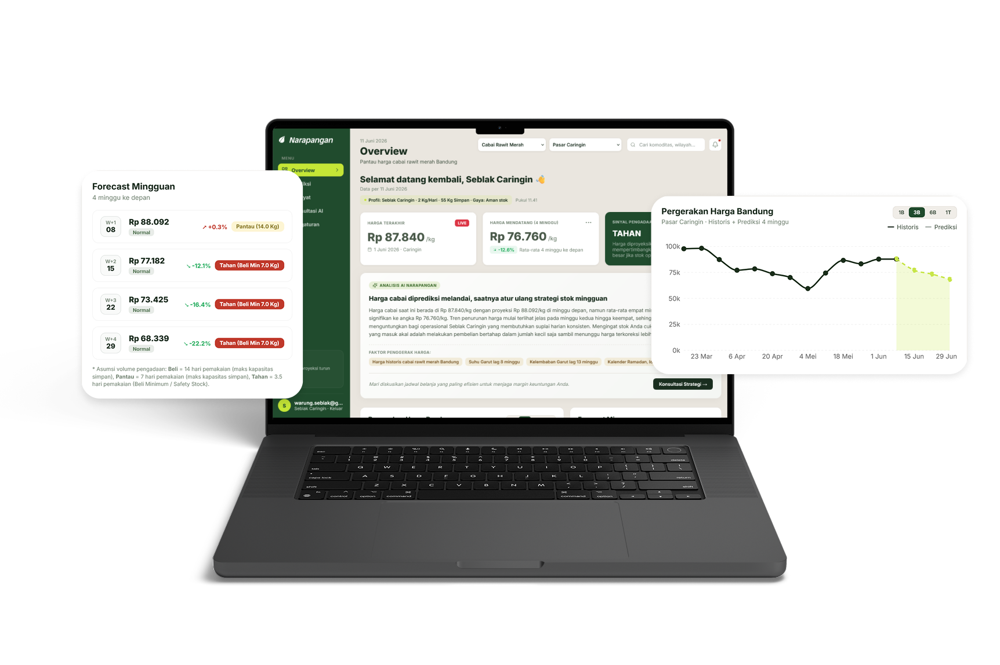

Data Science student at Telkom University. My interests lean toward consultation, data visualization, urban analytics, and NLP, partly because I have always been drawn to design and language as much as data.
About
I'm in my sixth semester of a B.Sc. in Data Science at Telkom University, focused on data visualization, analytics, big data, and time series forecasting. I like working end to end: building the ETL pipeline and the forecasting model, then the dashboard and visuals that make the results usable for someone who isn't a data scientist.
Before this, I studied Software Engineering at SMK Telkom Purwokerto, where I picked up database management, UI/UX design, and web development, a background that still shows up in how I think about interfaces for data products today.
Experience
Product Development Intern
EON Reality
Tutor, Bahasa Indonesia for Foreign Speakers
Telkom University Language Center
Full Stack Web Developer
PT. Breezelabs Cipta Utama
Projects
A decision support system for cabai rawit merah (bird's eye chili) price volatility in Bandung. Narapangan pairs deep learning price forecasts with generative AI to turn raw price signals into prescriptive procurement recommendations for local UMKM, replacing passive price-watching with tactical decisions.

Leadership
Director of Multimedia
SRE Telkom University
Dec 2024 – Dec 2025
Rebuilt SRE's digital presence from scratch, directing Social Media and Creative Media teams to establish unified visual branding. Drove 83% follower growth (1.8K to 3.3K) by aligning content with what the engagement data actually showed, and set up a Notion and Google Sheets system for cross-divisional scheduling.
Creative & Information Content Manager
IEEE Telkom University
Jan 2025 – Jan 2026
Produced visual explainers for the IEEE Louds series (Neuromorphic Computing, Quantum Computing, IoT), making research-level content accessible through modular design. Built a content schedule and script templates in Notion to speed up production.
Social Media Manager
SRE Telkom University
Dec 2023 – Dec 2024
Managed social content promoting renewable energy awareness, contributed design and media work for Green Impact Days 2024, and led Publication & Documentation for SREssay 2024, a national essay competition.
Skills